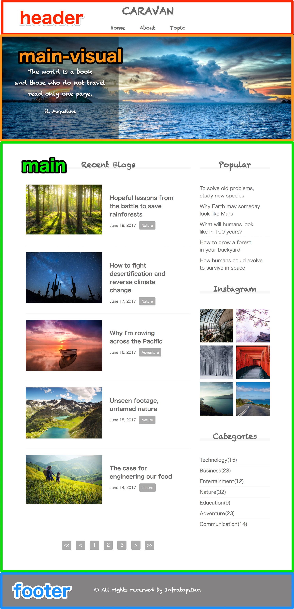
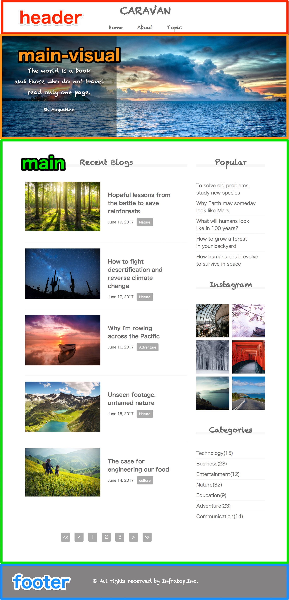

HOME
課題概要
この学習では、HTML/CSSを活用して下記のようなWebサイトを作成していただきます。

完成イメージをおおまかなブロックに分けると、下記のようになります。
・headerブロック
・main-visualブロック
・mainブロック
・footerブロック

初見だと難しそうに感じますが、大丈夫です。
工程ごとに分けて、一つ一つしっかり学んでいきましょう。
開発研修サイト
